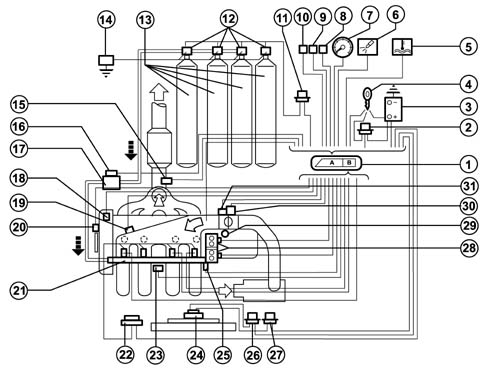
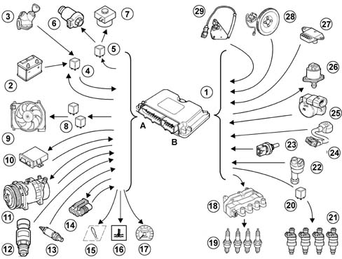
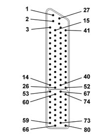
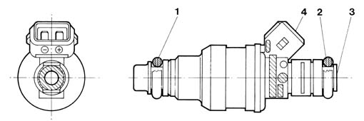
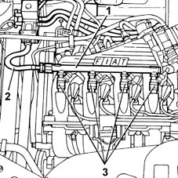
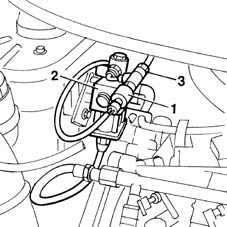
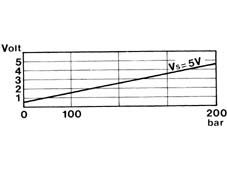

1058A GAS CIRCUIT MULTI POINT INJECTION
- Path
- Descriptions > 10 ENGINE UNIT > 1058 GAS CIRCUIT > 1058A GAS CIRCUIT MULTI POINT INJECTION
- Kind
- system description
- Applies to
- engines: 1.6 16v; all production periods; only with equipment: BIPOWER and BLUPOWER
- Interactive page
- https://sloeber94.github.io/elrnDB-fMltpl/en/#/2888250
Applies to: engines: 1.6 16v; all production periods; only with equipment: BIPOWER and BLUPOWER
The Marelli IAW 4GF.2M system belongs to the category of systems integrated with:
- inductive discharge digital electronic ignition
- static distribution
- sequential, phased electronic injection (1-3-4-2).

1, Engine control unit 2, Injection system relay 3, Battery 4, Ignition switch 5, Engine coolant overheating warning light 6, Injection system failure warning light 7, Signal for rev counter 8, Fiat CODE connection 9, Diagnostic equipment connection 10, Climate control connection 11, Canister solenoid valve relay feed 12, Canister solenoid valves 13, Methane canisters 14, Inertia switch 15, Lambda probe 16, Methane pressure sensor 17, Methane pressure reduction unit 18, Engine timing sensor 19, Air temperature and pressure sensor 20, Engine rpm and TDC sensor 21, Methane supply manifold with injectors 22, Injector relay feed 23, Detonation sensor 24, Radiator fan 25, Engine coolant temperature sensor 26, Radiator fan high speed relay feed 27, Radiator fan low speed relay feed 28, Ignition coils 29, Vehicle speed sensor 30, Engine idle speed actuator 31, Butterfly valve position sensor
The system operates in the same way as described for the bipower version, with the exception of the functions relating the operation of the electric fuel pump and the management of the fuel vapour recirculation which are peculiar to the petrol system.
There follows a description of the specific components for the methane injection injection: for anything not dealt with, refer to chapter 1056B.
DIAGRAM OF INPUT/OUTPUT INFORMATION FROM THE CONTROL UNIT
-

1, Engine control unit 2, Battery 3, Ignition switch 4, Injection system relay 5, Canister solenoid valves relay feed 6, Canister solenoid valves 7, Methane pressure reduction solenoid valve 8, Radiator fan relay feed 9, Radiator fan 10, Fiat CODE connection 11, Climate control connection 12, Methane pressure sensor 13, Lambda sensor 14, Diagnostic equipment connection 15, Injection system failure warning light 16, Engine coolant overheating warning light 17, Signal for rev counter 18, Ignition coil 19, Spark plugs 20, Injector relay feed 21, Methane injectors 22, Vehicle speed sensor 23, Engine coolant temperature sensor 24, Detonation sensor 25, Butterfly valve position sensor 26, Engine idle speed actuator 27, Air temperature and pressure sensor 28, Engine rpm and TDC sensor 29, Engine timing sensor
CONTROL UNIT PIN OUT
-

1, N.c. 2, N.c. 3, N.c. 4, Rev counter signal 5, N.c. 6, N.c. 7, N.c. 8, N.c. 9, Lambda sensor (negative) 10, N.c. 11, N.c. 12, N.c. 13, Fiat CODE two-way line 14, Fan high speed relay operation 15, Low relay operation 16, N.c. 17, Engine coolant overheating warning light 18, N.c. 19, N.c. 20, Lambda sensor (positive) 21, N.c. 22, N.c. 23, N.c. 24, N.c. 25, Diagnostic socket (line k) 26, Injection system failure warning light 27, Power control unit earth 28, Power control unit earth 29, Control unit supply (+12V Batt.) 30, Methane pressure sensor supply 5V 31, N.c. 32, N.c. 33, Methane pressure sensor earth 34, N.c. 35, Request to engage fan low speed 36, N.c. 37, N.c. 38, N.c. 39, N.c. 40, Fan low speed relay operation 41, Air conditioning compressor relay 42, N.c. 43, N.c. 44, Lambda sensor cable screening 45, N.c. 46, Gas pressure signal 47, Key on signal 48, Air conditioning engagement request 49, N.c. 50, Vehicle speed signal 51, N.c. 52, N.c. 53, Rpm sensor (positive) 54, Sensor earth 55, Intake air temperature signal 56, Detonation sensor (positive) 57, Stepper phase C operation 58, Stepper phase D operatoin 59, Ignition coils (cylinders 1-4) 60, Butterfly valve position sensor supply +5V 61, N.c. 62, Engine coolant temperature sensor (positive) 63, Detonation sensor cable screening 64, Stepper phase B operation 65, Stepper phase A operation 66, Ignition coils (cylinders 2-3) 67, Rpm sensor (negative) 68, Absolute pressure and timing sensor supply 69, Timing sensor signal 70, Detonation sensor (negative) 71, Injector for cylinder no. 1 72, Injector for cylinder no. 4 73, N.c. 74, N.c. 75, Pressure sensor signal 76, Butterfly valve position signal 77, Rpm sensor cables screening 78, Injector for cylinder no. 3 79, Injector for cylinder no. 2 80, N.c.
METHANE INJECTORS
Construction features
The specific methane injectors are the sonic type.
The main difference between these injectors and those which operate on petrol lies in the fact that they have a larger nozzle for the exit of the methane and they receive a considerably higher pressure (9 ± 1 bar). As a result, the quantity of methane injected only depends on the opening time of the injector (injection time) which is established by the electronic control unit.
The injectors are fixed by the methane distribution manifold, which presses them into their seats in the inlet ducts.
They are also secured to the methane distribution manifold by means of safety clips. Two rubber seals (1) and (2) ensure the sealat the inlet manifold and the methane distribution manifold.
The methane is supplied at the top (3) of the injector (top feed); the connector for the operation of the injector engages in the seat (4).

Operation
The control logic for the injectors is the sequential, phased type, in other words the four injectors are operated individually according to the engine cylinder inlet sequence, whilst the supply for each cylinder can already start when the inlet stroke has already started.
METHANE MANIFOLD
Construction features
The methane distribution manifold (1) is fixed at the top part of the intake manifold. It receives methane at low pressure from the flexible pipe (2) which acts as a connection with the pressure reduction unit and distributes it to the four injectors (3).

METHANE PRESSURE SENSOR
The pressure sensor (1) is fitted on the pressure reduction unit (2), at the high pressure line (3) intake.
Construction features
It is a capacitive type sensor (where the sensitive element is made from two gold-plated ceramic discs) which contains the signal conditioning circuit.
It receives a supply of 5V.
The measurement of the methane pressure at the high pressure line is designed to:
- indicate the quantity of methane in the canister (fuel gauge)
- provide an indication to the control unit for automatically switching the supply from methane to petrol if the methane pressure is too low (below 15 bar)

Supply: pin 30
Earth: pin 33
Signal: pin 46

PETROL/METHANE SWITCH
The system has a petrol-methane selector button which operates in the following way:
- button pressed, petrol operation
- button not pressed, methane operation, with the exception of certain particular situations (initial starting after methane supply, methane has run out, faults which require a switch to petrol).